南青介绍
关于南青
《南邮青年》创刊于1985年，是直属于南京邮电大学团委的面向全校师生的校园杂志。创刊32年来始终坚持独立编辑、自主排版，坚持原创和创新，生动记录了学校的风雨历程和师生的校园生活，为繁荣的校园文化添上了浓墨重彩的一笔。《南邮青年》社在负责编辑出版校刊《南邮青年》的同时也负责编辑发行《南京邮电大学团委手机报》，并拥有自己的电子刊物《南邮青年电子杂志》。
三十多年来，《南邮青年》社始终致力于营造校园人文氛围，丰富大家的课余生活，坚持关注真实的学生生活，反映真实的同学声音，从平面形态走向立体语言。在南邮这样一片孕育理工科精英的沃土中，《南邮青年》让大家感受到了一种别样的人文情怀。
《南邮青年》社现设有五个部门：细微后勤、活力统筹的办公室；捕光逐影、精通采访的记者团；妙笔生花、意趣横生的采编部；南青门户——网宣部；一键美“颜”的美编部。在《南邮青年》社，你不仅可以放飞文字梦想、展现文艺文采，还可以在这里收获无与伦比的乐趣与友谊。
南青历程
-
1985年
-
《南邮青年》这本杂志的诞生汇聚了众人的力量，从出生起，就决定了其背负着的重要使命。
-
1995年
-
作为校刊，南青在南邮的名声越来越响，南青为那些身在南邮这所工科院校里的热爱文学的人带去一股清新的文艺之风。
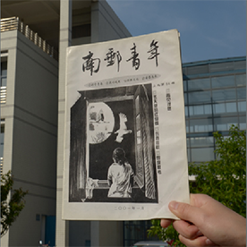
-
2005年
-
南青获得校级十佳社团、先进团体、优秀新闻工作者等等荣誉。20年走来，南青用自己的努力证明了自己的实力。
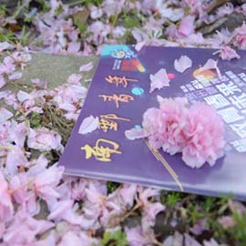
-
2015年
-
从1985年至今，从三牌楼到仙林，《南邮青年》始终引领着南邮校园人文精神的建设，时光来去匆匆，记忆里剪影斑驳，感谢路途上南邮学子的陪伴，让我们再回首满是喜悦。
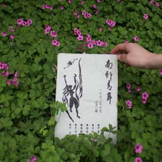
- 至今
作品展示
-
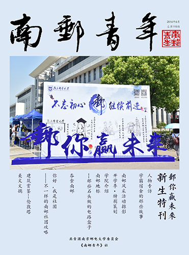
邮你赢未来-新生特刊
-
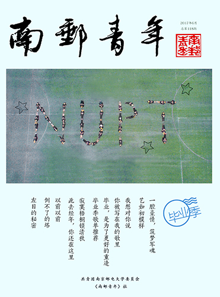
毕业季
-
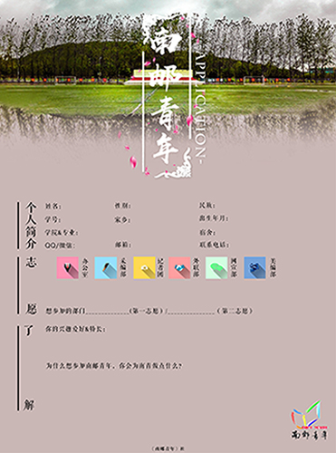
招新报名表
-
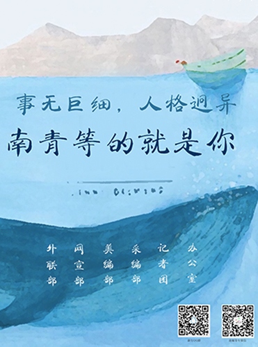
招新海报
记者团
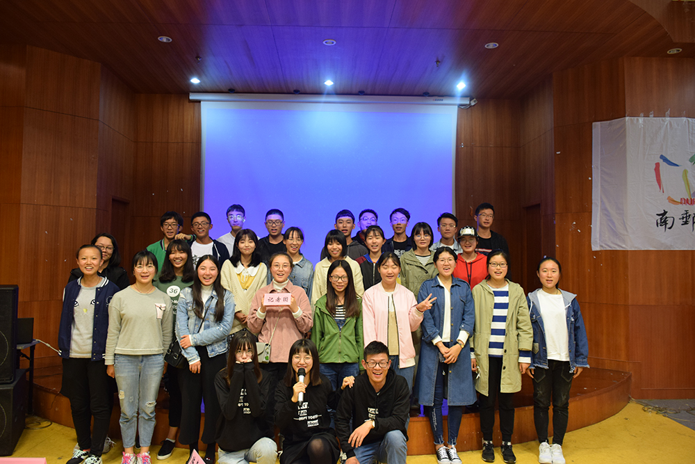
记者团是一个充满友爱与活力的大家庭，作为一个极具活力的集体，我们将如花笑靥定格在记忆的相片中，将欢声笑语记录在温暖的文字里。
爱跑新闻、爱按快门、爱采访、爱摄影、爱创意，爱独挡一面，更爱相互合作，拒绝沉默，拒绝平庸。
学校的每一场重大活动都有我们的身影，我们具有理想，但又行稳求实。
如果你希望能在第一时间拿手中的相机记录下那些令人动容的精彩瞬间，借独特的文字展现他人的奋斗历程，用睿智的语言和校园里的精英们促膝长谈，以优秀的表达和组织能力丰富校园文化建设，那记者团绝对是你最好的选择！
美编部
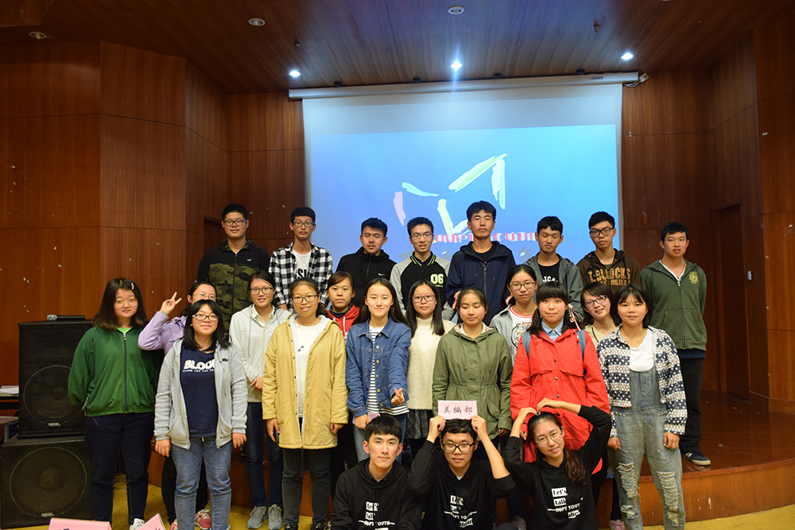
美编部主要负责杂志的排版以及社团日常的设计工作，包括社服的设计、海报设计、宣传单设计等。一本杂志的文字可以称作杂志的心，那杂志的排版就可以称作杂志的形了，美编部则是这一“形”的缔造者、创造者。
“形”之美对于一本杂志是至关重要的，美的“形”不仅需要一双发现美的眼睛，还需要一双会创造的双手。美编部能赋予你一双发现美的眼睛和创造的双手，来到美编部，你将学会使用Photoshop和InDesign。
美编是一个快乐的大家庭，在这个大家庭中我们要注入新鲜的血液使她活力无限青春永驻。
采编部
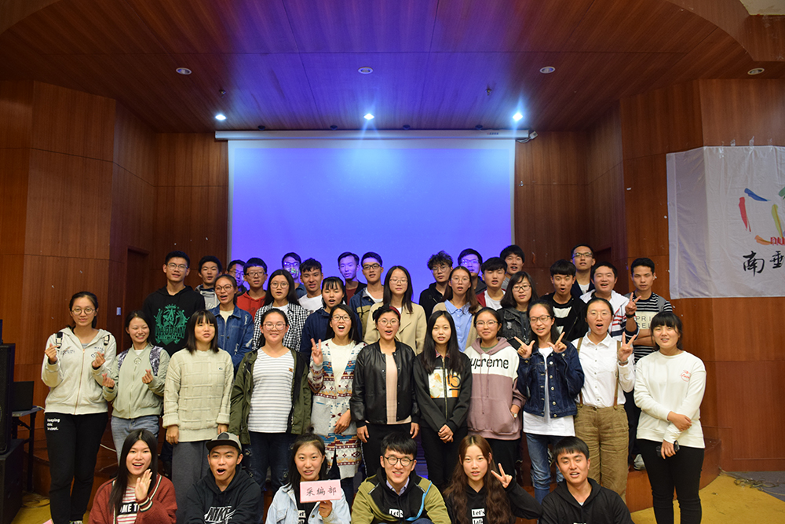
采编部，热闹但不喧嚣，宁静但不沉寂，我们聚在一起，只为把才情，转化为有态度，有深度，有温度的文字。
每一篇出现在杂志上的文章，都经过反复的推敲和斟酌，表达的，却是每一位采编人热眼看世界的激情。
作为参与编辑《南邮青年》杂志的重要部门，在这里，你可以将不被拘束的思维，洞观世界的深刻，天马行空的创意，改变世界的梦想表达，变成铅字，唤醒更多的力量。
心里一撮小火，身体离地半尺，不做蝼蚁，不做神，做个写字的人。采编，何其所幸遇见你。
网宣部
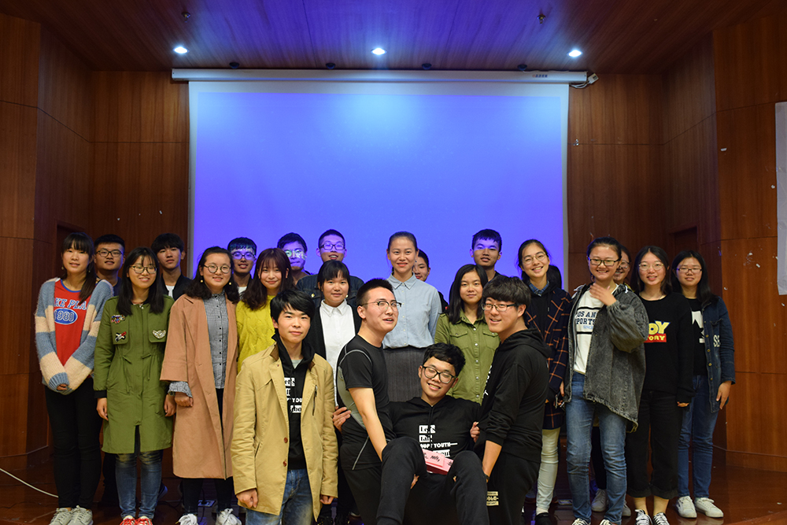
《南邮青年》社从2006年开始接触网络媒体，也是从那时起南青组建了网络宣传部，简称网宣部。 网宣部负责
《南邮青年》社的线上宣传工作，运营着“南邮青年”微信公众号、微博、扣扣等各种网络平台以及负责平
台上信息的发布，网宣部还负责电子杂志的制作和一年一度的校园电子杂志大赛的承办。
办公室
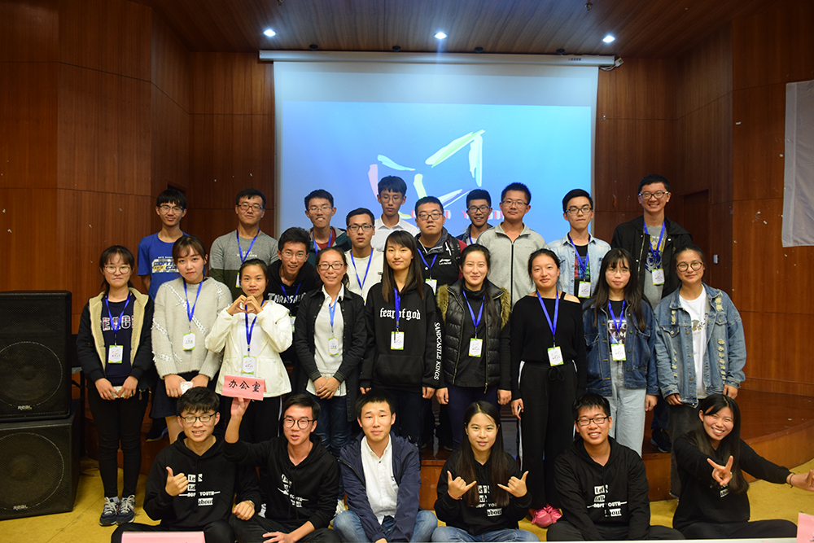
办公室是社团的核心枢纽，主要负责调节社团内部的运作，统筹社团活动与事物，最最最重要的是进行整个社团的财务管理，别具温暖与趣味！
在这里，你可得不寻常的锻炼机会，提升自己安排、处理事情的能力，增强人际交往能力和团队协作精神，尽情彰显你的才情。